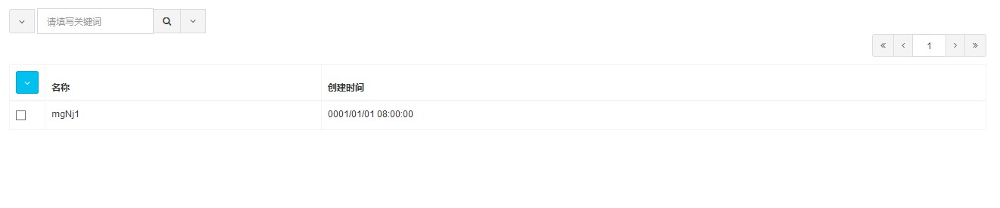

插件(Common.Base)
插件包含了通用性高的最基本的功能和资源，可以满足大部分网站的需求。
在示例项目中使用这个插件时请先引用Common.Base\bin\Common.Base.dll，否则VS会提示错误（但不影响ZKWeb加载）。
通用配置
通用配置可以保存网站全局使用的参数，例如网站名称和默认语言等。
添加Example\src\config\ExampleConfig.cs，内容如下
/// <summary> /// 示例配置 /// </summary> [GenericConfig("Example.ExampleConfig", CacheTime = 15)] public class ExampleConfig { public string ExampleName { get; set; } public int ExampleCount { get; set; } }
配置需要添加GenericConfig属性，第一个参数是保存到数据库时使用的键名，CacheTime可以指定缓存时间（秒）。
缓存时间不会影响到网站部署到单个进程时的读取，单个进程时读取配置总能读到最新的配置。
但会影响网站部署到多个进程或服务器时的读取，缓存时间不应该指定太长。
读取和写入配置
注意首次获取ExampleConfig或之前保存了null值时会返回一个新的实例，GetData不会返回null。
在ExampleController下添加以下内容
[Action("example/read_config")] public string ReadConfig() { var configManager = Application.Ioc.Resolve<GenericConfigManager>(); var config = configManager.GetData<ExampleConfig>(); return JsonConvert.SerializeObject(config); } [Action("example/write_config")] public string WriteConfig() { var configManager = Application.Ioc.Resolve<GenericConfigManager>(); var config = configManager.GetData<ExampleConfig>(); config.ExampleName = "updated"; config.ExampleCount++; configManager.PutData(config); return "success"; }
定时任务
定时任务可以用于在网站后台执行定时处理。
注意网站被IIS回收后，将不会定时执行这些任务（其他的网站内嵌定时任务框架也一样），
如果需要定时任务必须在指定的时间运行，请设置IIS程序池常驻或使用独立的进程处理。
定时任务已考虑到部署到多个服务器时的情况，部署到多个服务器仍可以保证任务不被重复执行。
添加Example\src\ScheduledTasks\ExampleTask.cs，内容如下
这个任务每15分钟写入一次日志
/// <summary> /// 示例任务 /// </summary> [ExportMany, SingletonReuse] public class ExampleTask : IScheduledTaskExecutor { public string Key { get { return "Example.ExampleTask"; } } public bool ShouldExecuteNow(DateTime lastExecuted) { return ((DateTime.UtcNow - lastExecuted).TotalMinutes > 15); } public void Execute() { var logManager = Application.Ioc.Resolve<LogManager>(); logManager.LogDebug("Example task executed"); } }
会话
考虑到网站部署到多个服务器，会话应该保存到数据库中。
会话会在当前请求期间共享同一个对象，但不会缓存到这个期间外。
获取和保存会话
在ExampleController下添加以下内容
调用SaveSession可以保存之前使用GetSession获取的会话。
[Action("example/get_session")] public string GetSession() { var sessionManager = Application.Ioc.Resolve<SessionManager>(); var session = sessionManager.GetSession(); return JsonConvert.SerializeObject(session, Formatting.Indented); } [Action("example/save_session")] public string SaveSession() { var sessionManager = Application.Ioc.Resolve<SessionManager>(); var session = sessionManager.GetSession(); session.Items["ExampleKey"] = DateTime.UtcNow; sessionManager.SaveSession(); return "success"; }
会话有过期时间，需要延长过期时间时可以使用SetExpiresAtLeast函数。
以下代码设置会话最少有效一个小时
session.SetExpiresAtLeast(TimeSpan.FromHours(1));
css样式
这个插件使用了以下css样式，具体用法可以参考他们的官网
- Bootstrap 3.3.2
- AdminLTE 2.3.0
js脚本
这个插件使用了以下js脚本，具体用法可以参考他们的官网
- jQuery 1.11.2
- jquery-migrate
- jquery-form
- jquery-mobile
- jquery-toast
- jquery-validate
- jquery-validate-unobtrusive
- Bootstrap 3.3.2
- context-menu
- dialog
- hover-dropdown
- Switchery 0.8.1
- jsUri 1.3.1
- Underscore 1.8.3
这个插件还带了很多零碎的附加功能，具体可以参考Common.Base\static\common.base.js\custom。
图标字体
这个插件使用了以下图标字体，具体用法可以参考他们的官网
- Font Awesome 4.5.0
Ajax表格构建器
Ajax表格构建器可以用于构建从远程载入内容的Ajax表格，并带分页等支持。
以下例子没有针对前台显示优化，实际在前台使用时需要其他样式。
表格构建器可以单独使用，不一定和搜索栏构建器一起使用。
在ExampleController下添加以下内容
[Action("example/table")] public IActionResult Table() { var table = new AjaxTableBuilder(); table.Id = "ExampleTable"; table.Target = "/example/table/search"; var searchBar = new AjaxTableSearchBarBuilder(); searchBar.TableId = table.Id; searchBar.Conditions.Add(new FormField(new CheckBoxFieldAttribute("Deleted"))); return new TemplateResult("example/example_table.html", new { table, searchBar }); } [Action("example/table/search", HttpMethods.POST)] public IActionResult TableSearch() { var json = HttpContextUtils.CurrentContext.Request.Get<string>("json"); var request = AjaxTableSearchRequest.FromJson(json); var response = request.BuildResponseFromDatabase(new[] { new ExampleAjaxTableCallback() }); return new JsonResult(response); }
添加Example\templates\example\example_table.html，内容如下
{% use_title "Example Table" %}
{% include common.base/header.html %}
<div class="portlet">
{{ searchBar }}
{{ table }}
</div>
{% include common.base/footer.html %}
添加Example\src\AjaxTableCallbacks\ExampleAjaxTableCallback.cs，内容如下
/// <summary> /// 示例的表格搜索回调 /// </summary> public class ExampleAjaxTableCallback : IAjaxTableCallback<ExampleTable> { /// <summary> /// 构建表格时的处理，这里不使用 /// </summary> public void OnBuildTable(AjaxTableBuilder table, AjaxTableSearchBarBuilder searchBar) { } /// <summary> /// 查询数据 /// </summary> public void OnQuery( AjaxTableSearchRequest request, DatabaseContext context, ref IQueryable<ExampleTable> query) { if (!string.IsNullOrEmpty(request.Keyword)) { query = query.Where(q => q.Name.Contains(request.Keyword)); } bool deleted = request.Conditions.GetOrDefault<string>("Deleted") == "on"; query = query.Where(q => q.Deleted == deleted); } /// <summary> /// 排序数据 /// </summary> public void OnSort( AjaxTableSearchRequest request, DatabaseContext context, ref IQueryable<ExampleTable> query) { query = query.OrderByDescending(q => q.Id); } /// <summary> /// 选择数据 /// </summary> public void OnSelect( AjaxTableSearchRequest request, List<KeyValuePair<ExampleTable, Dictionary<string, object>>> pairs) { foreach (var pair in pairs) { pair.Value["Id"] = pair.Key.Id; pair.Value["Name"] = pair.Key.Name; pair.Value["CreateTime"] = pair.Key.CreateTime.ToClientTimeString(); } } /// <summary> /// 添加列和操作等 /// </summary> public void OnResponse(AjaxTableSearchRequest request, AjaxTableSearchResponse response) { response.Columns.AddIdColumn("Id"); response.Columns.AddMemberColumn("Name"); response.Columns.AddMemberColumn("CreateTime"); } }
效果

在这个例子中表格使用了AjaxTableSearchResponse.FromRequest来构建搜索结果，
这个函数可以自动从数据库中获取数据，交给表格搜索回调处理并进行分页，
如果需要自己处理也可以自己构建AjaxTableSearchResponse的数据。
使用表格回调的原因是搜索时可以支持多个回调，这样易于修改其他插件的表格内容。
默认表格的样式在static/common.base.tmpl/ajaxTable.tmpl中，
如果需要使用自己的样式可以修改table.Template。
静态表格构建器
静态表格构建器和Ajax表格器不同的时，构建的内容需要使用模板绑定并静态显示，不支持通过Ajax更新。
静态表格的参数来源一般来自url。
在ExampleController下添加以下内容
[Action("example/static_table")] public IActionResult StaticTable() { var request = StaticTableSearchRequest.FromHttpRequest(); var response = request.BuildResponseFromDatabase(new[] { new ExampleStaticTableCallback() }); return new TemplateResult("example/example_static_table.html", new { response }); }
添加Example\templates\example\example_static_table.html，内容如下
{% use_title "Example Table" %}
{% include common.base/header.html %}
<div class="portlet">
<div>
{% for row in response.Rows %}
<div>
<a>{{ row.Name }}</a>
<span>{{ row.CreateTime }}</span>
</div>
{% endfor %}
</div>
{% url_pagination response.Pagination %}
</div>
{% include common.base/footer.html %}
添加Example\src\StaticTableCallbacks\ExampleStaticTableCallback.cs，内容如下
/// <summary> /// 示例的表格搜索回调 /// </summary> public class ExampleStaticTableCallback : IStaticTableCallback<ExampleTable> { /// <summary> /// 查询数据 /// </summary> public void OnQuery( StaticTableSearchRequest request, DatabaseContext context, ref IQueryable<ExampleTable> query) { if (!string.IsNullOrEmpty(request.Keyword)) { query = query.Where(q => q.Name.Contains(request.Keyword)); } query = query.Where(q => !q.Deleted); } /// <summary> /// 排序数据 /// </summary> public void OnSort( StaticTableSearchRequest request, DatabaseContext context, ref IQueryable<ExampleTable> query) { query = query.OrderByDescending(q => q.Id); } /// <summary> /// 选择数据 /// </summary> public void OnSelect( StaticTableSearchRequest request, List<KeyValuePair<ExampleTable, Dictionary<string, object>>> pairs) { foreach (var pair in pairs) { pair.Value["Id"] = pair.Key.Id; pair.Value["Name"] = pair.Key.Name; pair.Value["CreateTime"] = pair.Key.CreateTime.ToClientTimeString(); } } }
效果

表单构建器
表单构建器可以构建常用的表单，并支持多种表单字段和客户端+服务端验证。
默认构建的表单都会带CSRF校验值，防止跨站攻击。
使用例子
在ExampleController下添加以下内容
[Action("example/form")] [Action("example/form", HttpMethods.POST)] public IActionResult Form() { var form = new ExampleForm(); if (HttpContextUtils.CurrentContext.Request.HttpMethod == HttpMethods.POST) { return new JsonResult(form.Submit()); } else { form.Bind(); return new TemplateResult("example/example_form.html", new { form }); } }
添加Example\templates\example\example_form.html，内容如下
{% use_title "Example Form" %}
{% include common.base/header.html %}
<div class="portlet">
{{ form }}
</div>
{% include common.base/footer.html %}
添加Example\src\Forms\ExampleForm.cs，内容如下
提示[Required]属性找不到时请引用程序集System.ComponentModel.DataAnnotations
/// <summary> /// 示例表单 /// </summary> public class ExampleForm : ModelFormBuilder { [Required] [StringLength(100)] [TextBoxField("Name", "Please enter name")] public string Name { get; set; } [Required] [TextBoxField("Age", "Please enter age")] public int Age { get; set; } protected override void OnBind() { Name = "Tom"; Age = 25; } protected override object OnSubmit() { var message = string.Format("Hello, {0} ({1})", Name, Age); return new { message }; } }
效果

更多的表单字段类型
插件还提供了以下表单字段类型，使用时请参考各个字段的文档。
- LabelFieldAttribute(string name)
- TextBoxFieldAttribute(string name, string placeHolder = null)
- PasswordFieldAttribute(string name, string placeHolder = null)
- TextAreaFieldAttribute(string name, int rows, string placeHolder = null)
- CheckBoxFieldAttribute(string name)
- CheckBoxGroupFieldAttribute(string name, Type source)
- CheckBoxGroupsFieldAttribute(string name, Type source)
- CheckBoxTreeFieldAttribute(string name, Type source)
- DropdownListFieldAttribute(string name, Type source)
- SearchableDropdownListFieldAttribute(string name, Type source)
- RadioButtonsFieldAttribute(string name, Type sources)
- FileUploaderFieldAttribute(string name, string extensions = null, int maxContentsLength = 0)
- HiddenFieldAttribute(string name)
- JsonFieldAttribute(string name, Type fieldType)
- HtmlFieldAttribute(string name)
数据库操作类
为了简化数据库操作，这个插件提供了通用仓储GenericRepository和工作单元UnitOfWork。
GenericRepository提供了共通的操作函数，UnitOfWork负责管理数据库上下文和事务的提交。
使用例子
在ExampleController下添加以下内容
[Action("example/uow")] public string Uow() { // insert data string name = RandomUtils.RandomString(5); UnitOfWork.WriteData<ExampleTable>(r => { var data = new ExampleTable() { Name = name }; r.Save(ref data); }); // read inserted data var readData = UnitOfWork.ReadData<ExampleTable, ExampleTable>( r => r.Get(t => t.Name == name)); return JsonConvert.SerializeObject(readData); }
UnitOfWork不支持嵌套，需要多个仓储使用同一个数据库时请使用RepositoryResolver
UnitOfWork.Read(context => { var repository = RepositoryResolver.Resolve<ExampleTable>(context); var otherRepository = RepositoryResolver.Resolve<OtherTable>(context); });
需要自定义仓储时，可以创建一个仓储类继承GenericRepository并注册到IoC容器，
解决仓储时会自动使用自定义的仓储。
前台页模板
这个插件提供了以下的前台页模板，如有需要可以根据路径在其他插件中重载。
- common.base\footer.html (前台通用尾部)
- common.base\header.html (前台通用头部)
- common.base\index.html (首页)
静态文件处理器
这个插件提供了静态文件专用的路径/static/文件路径，查找规则如下
- 查找
App_Data\static\文件路径 - 按插件注册顺序反向查找
插件文件夹\static\文件路径
例如注册了插件A和B时，查找/static/a/homepage.js顺序如下
App_Data\static\a\homepage.jsB\static\a\homepage.jsA\static\a\homepage.js
语言时区处理器
这个插件可以自动设置当前请求的语言和时区。
默认语言和时区可以修改通用配置LocaleSettings。
设置语言的顺序是
- 客户端传入的Cookies (LocaleUtils.LanguageKey: "ZKWeb.Language")
- 客户端浏览器语言，如果
LocaleSettings设置允许检测浏览器语言 LocaleSettings中的默认语言
设置时区的顺序是
- 客户端传入的Cookies (LocaleUtils.TimeZoneKey: "ZKWeb.TimeZone")
LocaleSettings中的默认时区
特征类
特征类Trait用于在外部标记指定类型的某些特征，但不需要修改原有的类型。
这个插件提供了以下的特征类
- EntityTrait (主键名称和类型)
- RecyclableTrait (是否可回收)
使用特征类的例子
var entityTrait = EntityTrait.For<TData>(); var expression = ExpressionUtils.MakeMemberEqualiventExpression<TData>(entityTrait.PrimaryKey, id);
提供自定义特征类需要在插件初始化时注册到IoC容器
Application.Ioc.RegisterInstance( new EntityTrait() { PrimaryKey = "Id", PrimaryKeyType = typeof(Guid) }, serviceKey: typeof(ExampleTableUseGuidPrimaryKey));